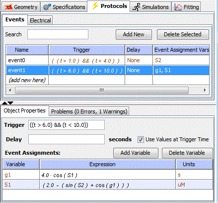

Events can be created within non-spatial deterministic models such that a variable or time-dependent expression can trigger a predefined reset or change in the value of other variables during simulation. Essentially, an event can be used to describe anything that is discontinuous. This can be convenient to specify protocols (e.g. to open a channel from time t1 to time t2).
An Event in the Virtual Cell is used to define 'when' an event can occur, 'what' variables (species, global parameters) are affected, 'how' the variables are affected and optionally, the delay in the effect of the event after the occurrence of the condition that triggers it. The two required parts of an event specification are a trigger conditional expression and at least one event assignment for a variable (speciesContext or global parameter). The event specification can also contain an optional delay expression.
The trigger expression must evaluate to a Boolean value. The event is fired at the time point when the trigger expression evaluates to "true" (transition from "false" to "true") during a simulation. An event can be fired multiple times during a simulation (whenever the trigger expression transitions from "false" to "true").
The optional delay expression represents the time duration between the firing of the event and the execution of the event assignments. The delay expression is evaluated at the instant the event is fired (when the trigger expression transitions from "false" to "true"). The delay expression, if present, has the unit of time (seconds in VCell).
An event has at least one event assignment. Each event assignment is an expression assigned to a variable in the model (typically a species or global parameter). The assignment of the expression to the variable happens at the instant the event is executed (at the end of the delay duration following the instant the event is triggered or fired). The unit if each event assignment is the same as the variable it represents (uM for species, units of the global parameter if event assignment is for a global parameter).
Note: Currently, events can be added only to non-spatial deterministic applications.

Viewing Events
In the Virtual Cell, an event can be specified in the Protocols section of an application. This can be accessed by selecting the 'Protocols' item under the application node in the Navigation panel tree structure. This displays the application in the View panel on the right, with the Protocols tab selected. Selecting the Events tab in the 'Protocols' tab displays the events in the application. If events exist in the application, the summary of the events (name, trigger and delay expressions, variables that have event assignments) are listed in a table in the 'View' panel. In this table, the Name column is editable, all other columns in the events summary table cannot be edited or sorted.
Adding/Deleting Events
Events can be added by clicking on the (add new here) row of the summary table. This creates a new default event. Alternately, clicking the Add New button adds a new default event to the table. To delete an existing event, select the event to be deleted and click the Delete Selected button. (Note: If a pulse is required, a second event must be included to switch the variable/parameter back to its original state.)
Editing Events
Clicking an individual event in the summary table displays the selected event in the lower Properties Panel. The Trigger expression and Delay expression are displayed in editable text fields. The trigger expression cannot be blank and there must be at least one Event assignment for an event to be valid. The checkbox Use Values at Trigger Time is a flag that indicates the time at which the event assignments of the event have to be evaluated. If the checkbox is checked, the event assignments are computed at the instant the event is triggered/fired, not after the delay duration (if delay is defined). If the checkbox is not checked, the assignment expressions are evaluated after the delay duration, i.e., at the instant the event is executed. Note that if no delay expression is specified, the checkbox has to be checked.
The Event assignments for the selected event are displayed in a table (showing variable name, expression and units) in the 'Properties Panel'. Event assignments can be added using the Add Variable button that pops up a dialog where the user is asked to select a variable name from a drop-down list of allowed variable names and provide an assignment expression for the variable. The 'Add Variable' dialog is shown in the figure below. An existing event assignment can be deleted by selecting the variable in the table and clicking the Delete Variable button.